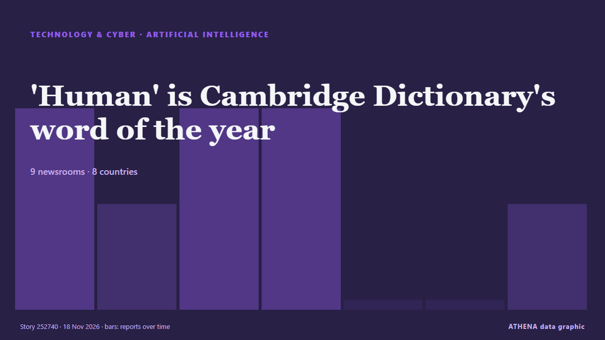

Technology, AI & Cybersecurity
SponsoredPresented by  Cybernetics and Artificial Intelligence Lab Welcome to the Cybernetics and Artificial Intelligence Laboratory, established at the Department of Business Administration of the National and Kapodistrian University of Athens. The lab is headed by Professor Dimitrios Thomakos. The lab aims to do research that can be published in top venues. Our research uses tools and methods of Artificial Intelligence, and lies in the following areas: - Forecasting - Decision making - Cyber security - Finance We are always looking forward to collaborating with exceptional students!
Cybernetics and Artificial Intelligence Lab Welcome to the Cybernetics and Artificial Intelligence Laboratory, established at the Department of Business Administration of the National and Kapodistrian University of Athens. The lab is headed by Professor Dimitrios Thomakos. The lab aims to do research that can be published in top venues. Our research uses tools and methods of Artificial Intelligence, and lies in the following areas: - Forecasting - Decision making - Cyber security - Finance We are always looking forward to collaborating with exceptional students!

Artificial intelligence'Human' is Cambridge Dictionary's word of the year
Other new words added to the dictionary in 2026 included “aura farming” and “looksmaxing”. from The Straits Times
| 5 Nov | 112 |
|---|---|
| 6 Nov | 54 |
| 7 Nov | 37 |
| 8 Nov | 42 |
| 9 Nov | 104 |
| 10 Nov | 114 |
| 11 Nov | 83 |
| 12 Nov | 74 |
| 13 Nov | 87 |
| 14 Nov | 39 |
| 15 Nov | 41 |
| 16 Nov | 108 |
| 17 Nov | 65 |
| 18 Nov | 4 |
OpenAI gives NATO access to most advanced cybersecurity AI
NATO operators this month built and deployed AI agents in an exercise, with help from OpenAI. from Defense One
Xi warns against ‘rampant’ protectionism ahead of Trump talks
New US rules released this week target Chinese companies’ use of overseas data centres and access to chips through third countries. from The Business Times
Ruling party leader says will push for 10-year exam ban for AI-assisted cheating
SEOUL, Nov. 17 (Yonhap) -- The leader of the ruling Democratic Party (DP) said T... from Yonhap (English)
Rare encounter with isolated Indigenous Awá people in Brazil exposes vulnerability
On Nov. 16, a group of roughly 20 Indigenous Awá people living in voluntary isolation approached an Indigenous Guajajara village, in Brazil’s northeastern Maranhão state. from Mongabay
Voyager 1 Has Sped Through Space at 38,000 Mph Since 1977. This Wednesday, It Will Finally Reach 1 Light-Day From Earth.
Voyager 1 has been on an incredible journey that's defied all expectations. from ScienceAlert
Gunmen kill Costa Rican journalist who reported on drugs trade
Rodríguez had denounced alleged links between criminal organisations and powerful figures in Costa Rica. from BBC News
CNN, BBC, Zoom among 178 targets hit by malicious software attack
Hackers used a compromised website optimization service to distribute malicious software to 178 organizations, including CNN, BBC, Zoom and HSBC. from UPI World News
‘I am not guilty’: Russell Brand statement read by wife
Authorities are investigating Brand over a message from prison, read publicly by his wife, in which he declared his innocence. from Sydney Morning Herald
California sues OpenAI over Hugging Face attack
California Attorney General Rob Bonta sued OpenAI on Monday, alleging the ChatGPT-maker misled and endangered the public by developing artificial intelligence (AI) models without proper safeguards. from MyJoyOnline
Miami evokes 'Vice City' ahead of Grand Theft Auto 6 launch
Miami landmarks are lighting up with its alter ego, Vice City, in the run-up to the launch. from The Straits Times
Google Maps rolling out travel itineraries & list search for Ask Maps
Ahead of the holiday season, Google Maps is launching a handy travel itineraries feature alongside a slew of other new capabilities for Ask Maps. more… from 9to5Google
‘GTA Flu’ could hit workplaces as millions prepare for GTA 6 release
By Zoila Palma: The highly anticipated release of Grand Theft Auto VI (GTA VI) on November 19 has sparked predictions of a wave of employee absences as fans prepare to take time off to play the game. from Breaking Belize News
US to curb China's access to AI chips as Trump heads to Asia
It also requires companies in Singapore, Thailand, Malaysia, Indonesia and Brazil to apply for US export licences. from The Straits Times
Tuned Instagram systems in India to curb sexually suggestive, violent content: Meta
Meta, which owns and operates Facebook and Instagram, said its systems now use “more capable AI models” that check content before it is recommended. from Hindustan Times
Seoul stocks open tad lower ahead of Nvidia earnings, key events
South Korean shares opened slightly lower Monday as investors braced for a series of major US events this week, including Anthropic's initial public offering and Nvidia Corp.'s earnings release, amid… from Korea Herald
Singapore, US agree to keep discussing Megaspeed as scrutiny of Nvidia scandal widens
Singapore's government said on Monday it has agreed to continue discussions with the United States about Megaspeed, the company at the centre of the Nvidia scandal. from Deccan Herald
15 German Guests Poisoned By Chlorine As Microsoft 365 Outage Delays Hotel Safety Alert
The hotel's monitoring system detected the unusually high chlorine levels and generated an email warning for staff. from NDTV World
SK Hynix to spend $1 billion over five years to support chip suppliers
SEOUL: South Korea’s SK Hynix said on Monday it plans to spend 1.4 trillion won ($1.05 billion) over the next five years to support domestic suppliers of semiconductor materials, parts and… from Business Recorder
US judge tosses new visa rules for Nigerians, other foreign students, journalists
A US federal judge on Monday struck down a Trump administration policy that would impose stricter limits on how long foreign students and journalists can study or work in the United States. from Vanguard
China-Indonesia Cultural Industry Exchange Symposium Held in Jakarta
Media OutReach Newswire – 17 November 2026 – On the afternoon of November 13, the China-Indonesia Cultural Industry Exchange Symposium, co-hosted by the China Intercontinental Communication Center… from Laotian Times
Panamanian authorities investigate bombing attack on investigative reporter’s home
Panamanian authorities are probing a bombing at the home of investigative journalist Rolando Rodríguez that caused property damage but no injuries. from Arab News
Europe hunts for Palantir alternatives as militaries seek to limit US dependence
Last week, Germany’s Helsing unveiled military intelligence software called Clarity. from The Business Standard (Bangladesh) (working feed)
A Collage Showing 49 Drill Holes Made by NASA’s Curiosity Mars Rover
Description This collage shows 49 drill holes captured by NASA’s Curiosity Mars rover as of November 2026. from NASA news releases
ULA Vulcan rocket failure destroys 40 Amazon Leo satellites
United Launch Alliance is known for its ultra-dependable Atlas V, but its its latest rocket is off to a shaky start. from Engadget
UN chief urges countries to rein in 'merciless' killer robots
Geneva, Switzerland: The United Nations chief called on countries Monday to impose binding rules on the use of "merciless" lethal autonomous weapons systems, often dubbed "killer r... from Oman Observer
Amazon Sells Data Centers to Blackstone in $5 Billion Deal
Blackstone’s data center acquisition vehicle has reportedly acquired a majority interest in two joint ventures with Amazon Web Services (AWS) in a $5 billion deal. from PYMNTS
Zelensky urges US and Musk to lift Starlink restrictions and be on 'right side of history'
The Ukrainian president says the slowed-down internet is making it difficult to stop Russian attacks. from BBC News
AI cheating sparks alarm ahead of South Korea's college exam
A South Korean exam cheat who confessed to using AI to post near-perfect accountancy test scores has sent teachers and officials scrambling to prevent similar misconduct ahead of this week’s crucial… from New Straits Times
Russia hopes to reduce its isolation by getting posts at UN telecoms agency
Moscow hopes to secure two senior roles at the International Telecommunication Union. from The Straits Times
More than 175,000 names back a call to reinstate Jensen Huang at Nvidia
An open letter asking Nvidia’s board to bring back Jensen Huang had more than 175,000 names on Monday, four days after he resigned as chief executive. from The Next Web
Musk, Uber co-founder join call for Jensen Huang's return to Nvidia
They are among 158,000 signatories of an open letter urging the board to reinstate Jensen Huang while an independent investigation establishes the facts. from Free Malaysia Today
Inside China's drive to build an AI-native generation
By 2030, Beijing wants AI literacy to be universal among schoolchildren. from The Business Standard (Bangladesh) (working feed)
Coles hit by cybersecurity incident
Supermarket giant Coles has urged customers to shop as normal after revealing it had identified as cybersecurity incident. from Sydney Morning Herald
Estonia prepares cloud-based digital government to keep public services running in case of occupation
Estonia is developing technological infrastructure that will allow the government to keep digital public services running even if the country is occupied or its data centres are destroyed. from Ukrainska Pravda (English)